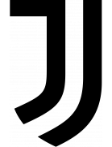

Der vollständige Name des Vereins lautet Juventus Football Club, ist aber bekannter unter dem Namen Juventus Turin oder Juve. Der Verein wurde am 1.November 1897 in Turin gegründet. Juve spielt im Juventus Stadium (Sponsorenname: Allianz Stadium), mit rund 41.500 Plätzen. Juventus Turin spielt in der ersten italienischen Liga, der Serie A.
Juventus ist einer der international erfolgreichsten Vereine Italiens. Zu Ihren internationalen Erfolgen gehören, der zweifache Champions League Sieg, der 3 malige Europa League Sieg und der 2 malige Gewinn des UEFA Super Cup.
Juventus ist der erfolgreichste Verein Italiens. Denn Juve hat 36 mal die italienische Meisterschaft gewinnen können. Zudem hat Juve 14 mal die Coppa Italia, den italienischen Pokal, gewonnen und 9 mal den Supercoppa Italiana, den italienischen Supercup, gewonnen. Damit ist Juventus in allen nationalen Wettbewerben Rekordsieger.